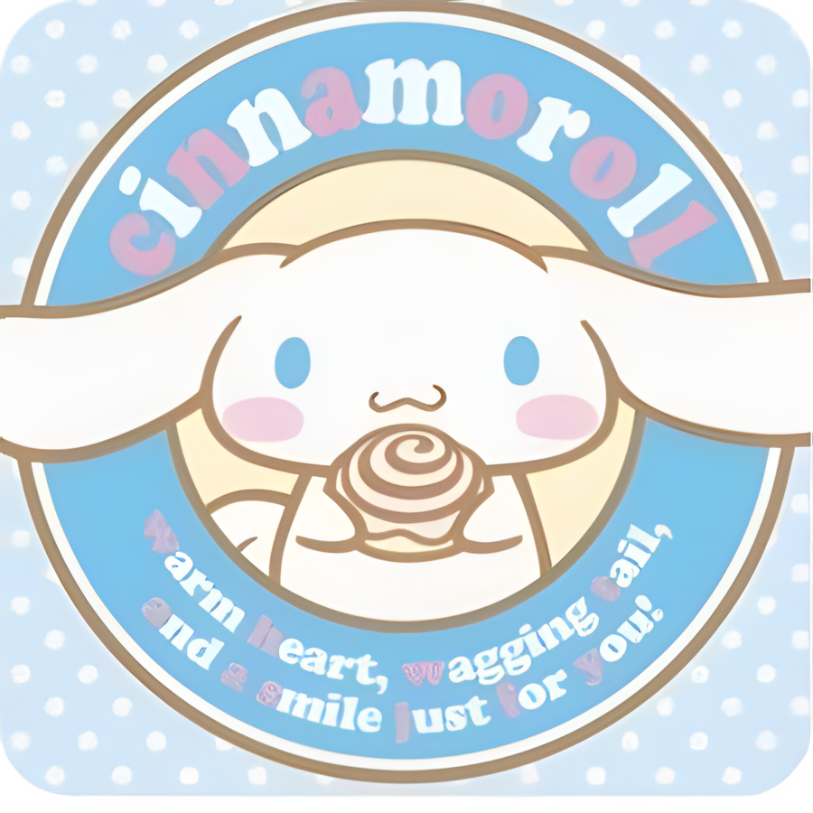
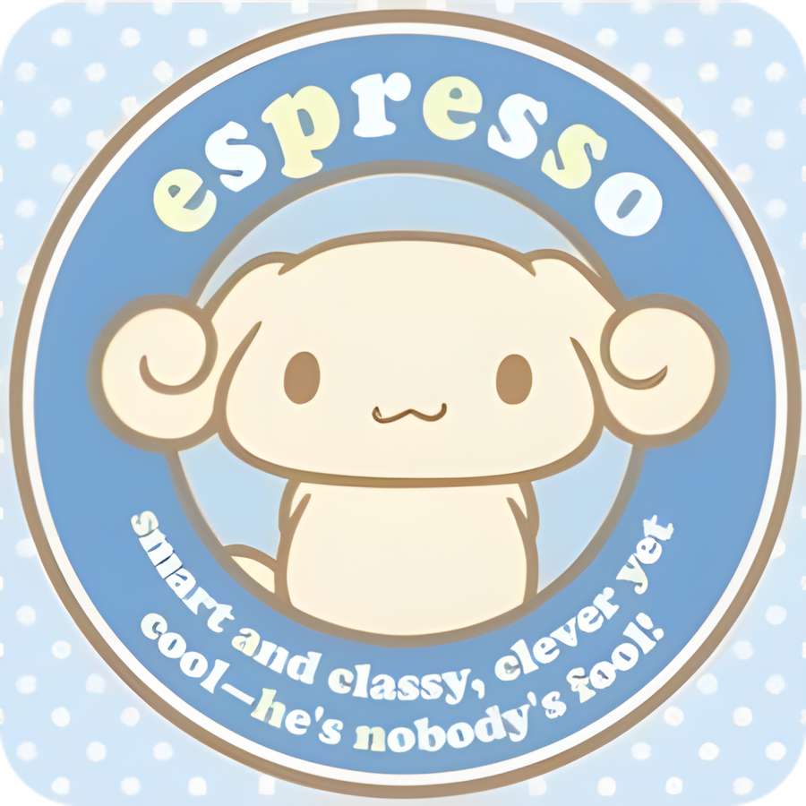
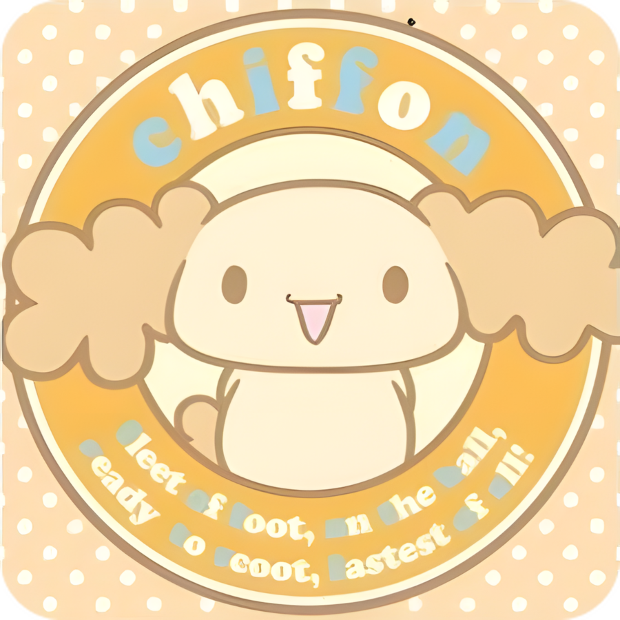
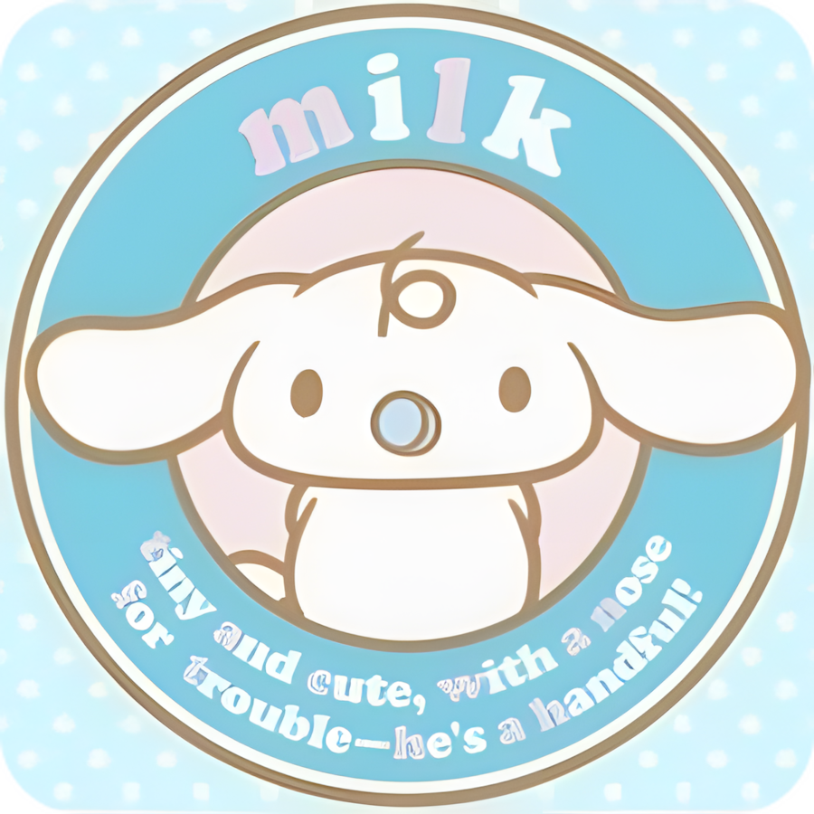
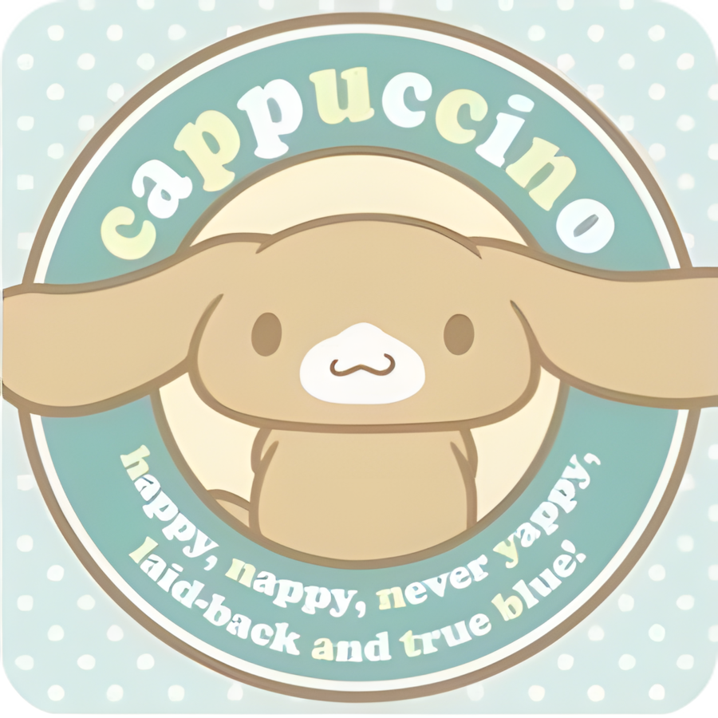
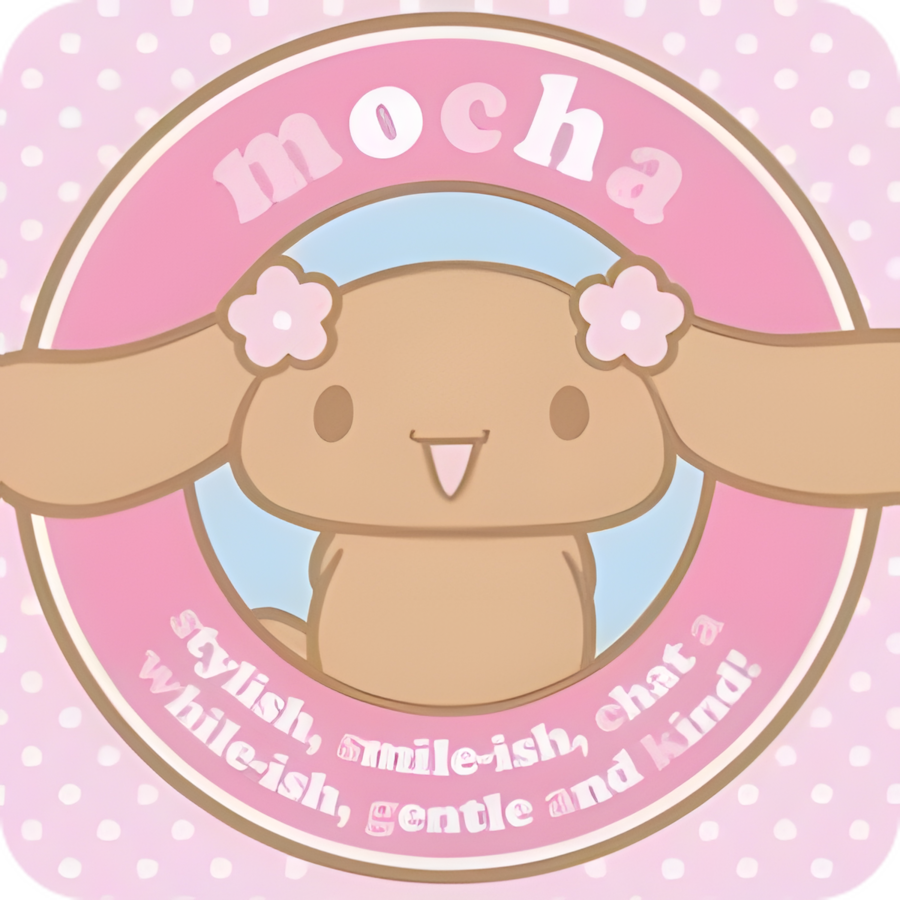

Cinnamoroll and Friends
Dale click para ver info sobre los papus

CinnamonCinnamon
Cumpleaños: 6 de marzo.
Es el protagonista de la pandilla: un perrito cachorro regordete y blanco, con la cola enrollada como un rollo de canela (por eso lo llaman "Cinnamon") y orejas tan grandes que le permiten volar por los cielos.

EspressoEspresso
Cumpleaños: 4 de diciembre.
Es muy inteligente, educado y tiene un peinado rizado muy elegante que le da un aire a Mozart.Sus dueños son de la alta sociedad.Le encanta dibujar, pintar y escuchar música, pero no puede dormir sin su mantita favorita.

ChiffonChiffon
Cumpleaños: 14 de enero.
Es la más enérgica y deportista de todos. Le encanta jugar tenis y su sueño es ganar una medalla de oro Olímpica. Sus orejas son esponjosas como un pastel de gasa (chiffon cake) y tiene un lado muy tierno y protector con los animales.

MilkMilk
Cumpleaños: 21 de mayo.
Es el bebé del grupo y destaca por tener un solo pelito rizado en la cabeza y usar siempre su chupete azul (binky). Todavía no sabe hablar, por lo que su única palabra común es "Ba-Boo". Adora a Cinnamoroll y su mayor deseo en la vida es convertirse igual a él cuando crezca.

CappuccinoCappuccino
Cumpleaños: 27 de junio.
Es el glotón del grupo, tiene un apetito enorme y le encantan las siestas largas y tranquilas. Su seña de identidad es la marca de cremita alrededor de su hocico que simula una taza de capuchino.

MochaMocha
Cumpleaños: 20 de febrero.
Es la más coqueta, amante de la moda y actúa como la "hermana mayor" que cuida de todos.
Se reconoce fácilmente por su pelaje marrón chocolate brillante y los lazos con flores que siempre lleva en las orejas.